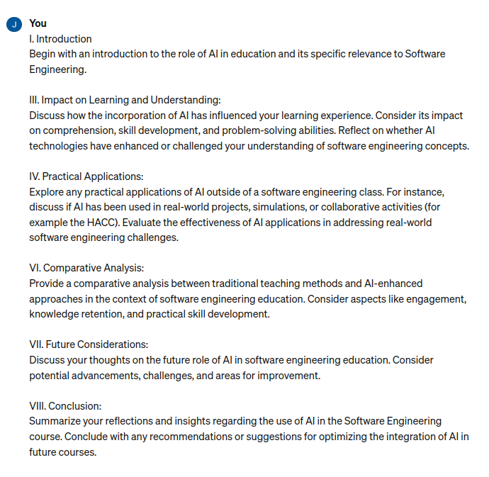
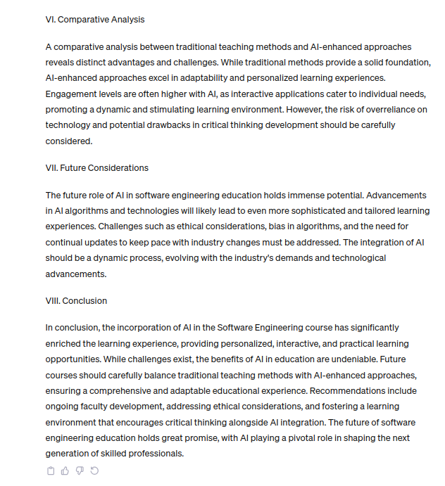
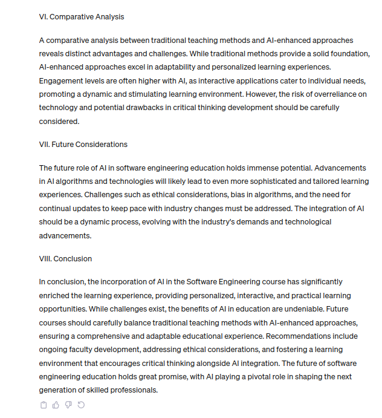

Working Smarter not Harder: AI as a Tool in Software Engineering Education
19 Nov 2023The images show the prompt and response from chatGPT as a starting point of this essay.

 

Introduction
The integration of Artificial Intelligence (AI) in education has revolutionized the learning landscape, providing innovative tools and methods to enhance the educational experience. In the field of Software Engineering, the role of AI is particularly significant, shaping the way students acquire and apply knowledge in this rapidly evolving domain. Considerably, the introduction of AI is a double edged sword of sorts with a fine line between a tool that enhances learning and a tool that limits comprehension.
Personally I have used chatGPT and GitHub CoPilot heavily in ICS 314 to assist me in various details of my work. A major concept I utilized AI for was the syntax in styling and explanations of errors in my work. In a way chatGPT served as a tool that could look through documentation and find results for small details so that I did not have to.
Personal Experience with AI
-
Experience WODs e.g. E18
Very useful in debugging and quickly resolving small details. For instance very useful in the bootstrap experiences when having syntax issues, alignment issues, or for how to have text float on an image. -
In-class Practice WODs
Helpful to use as a hint when I got stuck. For instance I had issues with the background image in murphys and I was able to explain my issue to chatGPT which solved the problem. -
In-class WODs
Life saver when time was running out and I needed to quickly understand the problems in my code. During one of the first few WODs I had a typo in the work constructor and I was not seeing that error until chatGPT helped me catch it quickly. -
Essays
I used chatGPT as a starting point for this essay and it was quite useful. Considerably, I could not use it in every section such as this section, but in most sections it served as a starting point and I just had to go back and edit the established paragraph and then add a paragraph relevant to me and my experience. -
Final project
Surprisingly capable in helping me implement various features or better understand small meteor details. For instance, I needed help figuring out how to list bullet point items in two columns and it worked great. Though not always the most useful in some debugging situations since the project is too large to easily copy and paste code into chatGPT. GitHub CoPilot is also immensely powerful and as long as I know what I am expecting to write, makes the code development go much faster. -
Learning a concept / tutorial
Has its limitations, useful if used in context with other resources. Could not rely only on chatGPT to use bootstrap but was a helpful supplement. -
Answering a question in class or in Discord
If I am asking a question in class or in Discord it was because AI was not very helpful. -
Asking or answering a smart-question
It just depends on the complexity and size of the question. For specific questions can be very useful, but for large or ambiguous questions, AI assistance had limitations. -
Coding example e.g. “give an example of using Underscore .pluck”
Very useful in providing and explaining examples as long as I ask the question correctly. For instance how do I create a bullet list from an array of items using meteor and react. -
Explaining code
Very useful in that I could have code explained line by line and ask for more details and explanations. When solutions to the in class practice WODs would be posted and I was confused on a section AI helped me understand what was going on. -
Writing code
Useful to an extent, generally the less code written by AI the more reliable. Though also useful in editing code I have already written. I found that in the final project I could paste my written code and then ask chatGPT to customize one part of it and it would work well. Oftentimes styling details is the most effective. -
Documenting code
I have yet to really use this feature. -
Quality assurance e.g. What’s wrong with this code or Fix the ESLint errors
Have not tried it with ESLint errors, but with errors with the code itself could be very useful. For instance in early WODs I had javascript syntax errors and chatGPT would be very capable of finding and fixing the issue. -
Other uses in ICS 314 not listed
Generally AI was useful in small pieces, whether that be how to get started, add a functionality, or tweak established code. When relied on too much was when it became less useful.
Impact on Learning and Understanding
My experience with AI in the context of Software Engineering has been extremely useful. The incorporation of AI technologies has allowed me to refine skills and fill in learning gaps. WIth AI, I was able to make more use of my time as I worked on course tasks. Rather than spending the time searching for a solution to my problems and questions, looking through documentation, articles, and other resources, I was able to use chatGPT to fill in those smaller questions of topics I already took the time to understand on a grander level. For instance, I understood the concept, use, and structure of bootstrap, but niche formatting details were easier to understand with the help of AI.
However, it’s essential to acknowledge that AI in education presents challenges as well. The reliance on AI may, at times, create a potential risk of oversimplifying concepts or hindering critical thinking skills. I mention that I was able to save time not looking through resources for the answer, yet it is still important that I know how to search through resources for an answer. Relying too heavily on AI may inhibit this skill. Though, perhaps like in the past with the introduction of the internet, students adapted their skills to using the internet for information rather than libraries, now with the integration of AI the more important skill to learn may be how to ask AI the proper questions to gain the proper information.
Ultimately, striking a balance between leveraging AI for its benefits while encouraging independent thinking remains crucial. One needs to have the responsibility to use AI as an assisting tool and not as a quick solution to completing assignments.
Practical Applications
Beyond the classroom, AI has found practical applications in real-world software engineering projects. AI has been instrumental in simulations, data analysis, and decision-making processes, significantly improving the efficiency and effectiveness of software engineering endeavors. The ability of AI to handle vast amounts of data and identify patterns has proven invaluable in tackling real-world issues, contributing to the advancement of the field.
Challenges and Opportunities
Using AI in this course revealed several challenges and opportunities. Opportunities include being able to raise the quality of my work through using AI to aid in better refactored code and easier implementation of features that would have taken more time and effort to research, interpret, and develop. For instance, with chatGPT I could more easily determine that perhaps my code had extra unnecessary divs, how to quickly fix alignment, or the syntax for border and button details.
Naturally, these opportunities also revealed challenges. The most obvious challenge being that sometimes the feedback given just was not good. Oftentimes this either meant that follow up questions were necessary, the initial question needed to be rephrased with more details, or other resources had to be utilized. The challenge this also faces is that sometimes I did not know what question to even ask in the first place.
These opportunities and challenges reveal the need to use AI as a tool that assists in your learning because if I relied too heavily on chatGPTs answers then I would not know how to understand the answers or not be able to determine if the information provided is any good.
Comparative Analysis
A comparative analysis between traditional teaching methods and AI-enhanced approaches reveals distinct advantages and challenges. While traditional methods provide a solid foundation in software engineering, AI approaches can help excel education through an adaptabile and focused learning environment. Engagement levels are often higher with AI when used properly, as interactive applications cater to individual needs, promoting a dynamic learning environment. However, the risk of overreliance on technology and potential drawbacks in critical thinking development should be carefully considered.
As such this reveals the need to use traditional methods along with AI in software engineering education. Through effectively utilizing the benefits of both methods one can raise the quality of education as a whole, ensuring quality engagement, knowledge retention, and skill development.
Future Considerations
The future role of AI in software engineering education holds immense potential. Advancements in AI algorithms and technologies will likely lead to even more sophisticated and tailored learning experiences. Challenges such as ethical considerations, bias in algorithms, and the need for continual updates to keep pace with industry changes must be addressed and naturally reveal the need for traditional methods. Overall, the integration of AI should be a dynamic process, evolving with the industry’s demands and technological advancements to best develop a framework that contributes to quality software engineering education.
Conclusion
Ultimately, my incorporation of AI in ICS 314 has significantly enriched my learning experience, providing personalized and focused learning opportunities. While challenges exist, the benefits of AI in education are undeniable. Future courses should include how to properly and responsibly use AI while also framing the course to encourage critical thinking and investigation alongside AI integration. AI has the potential to aid or inhibit the learning of software engineering and courses like ICS 314 have the potential to ensure that AI helps students thrive instead of holding them back.